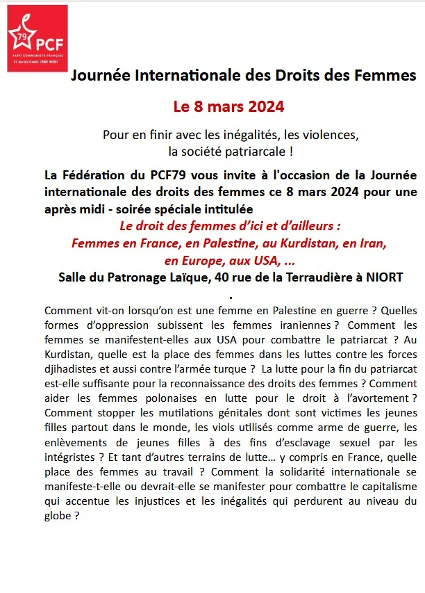
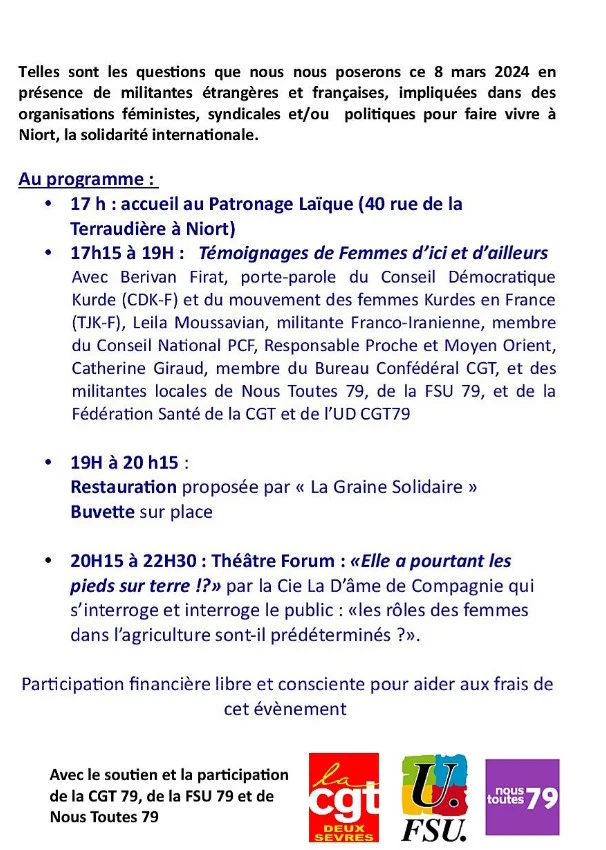

Communiqué de la fédération
8 mars. Notre communiqué pour les droits des femmes et le programme de Niort
Date indiquée par Facebook · 1 mars 2024
Repères éditoriaux
Les deux pages du communiqué fédéral et du programme sont conservées avec le message du 1er mars. Le compte rendu du 11 mars revient sur la soirée du 8 mars.
Texte conservé avec la publication
8 MARS - Journée Internationale des Droits des Femmes
Pour en finir avec les inégalités, les violences, la société patriarcale !
La Fédération du PCF79 vous invite ce 8 mars 2024 pour une
après midi - soirée spéciale intitulée :
LE DROIT DES FEMMES D'ICI ET D'AILLEURS
Femmes en France, en Palestine, au Kurdistan, en Iran, en Europe, aux USA, ...
Salle du Patronage Laïque, 40 rue de la Terraudière à NIORT
Voir programme soirée ci-dessous


Sources
Archive rouge · export Facebook · AR-0002-FB-01460
À lire aussi · À Niort, retour sur notre soirée du 8 mars pour les droits des femmes